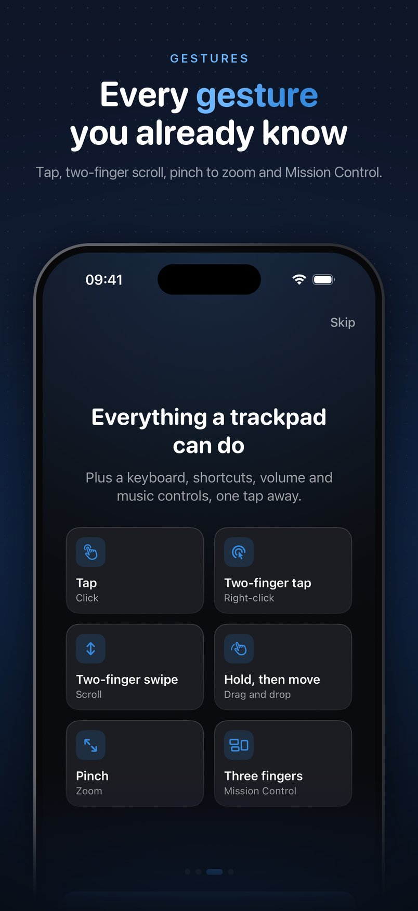
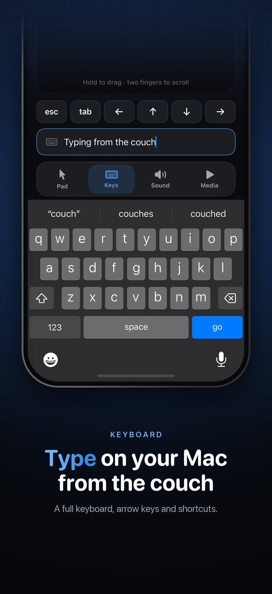
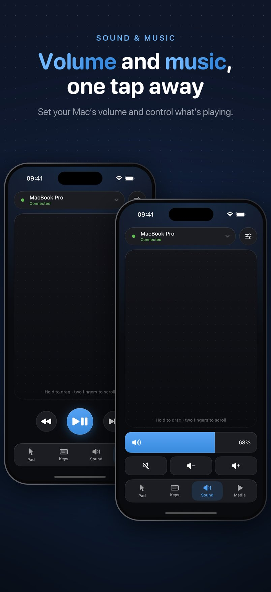
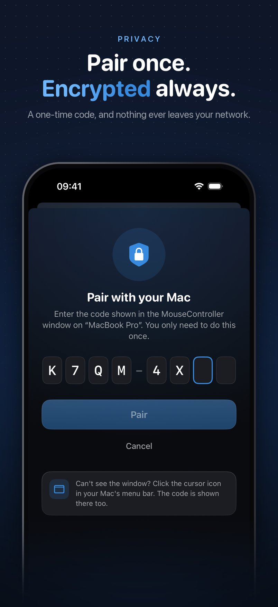

Mouse Controller
Turn your iPhone into a wireless trackpad and keyboard for your Mac.
Your Mac, from across the room
Mouse Controller lets you control your Mac from your iPhone over your local network. Use your phone as a trackpad from the couch, while you give a presentation, or when your Mac is connected to a TV, with no extra hardware.
It comes in two parts: the iPhone app you hold, with the trackpad, keyboard and media controls, and a free Mac companion app from the Mac App Store that runs in your menu bar and carries out the cursor, keyboard and volume actions. The two talk directly to each other over your Wi-Fi or Personal Hotspot. Nothing goes through the internet.
Screenshots







See it in action
Features
- Smooth cursor with adjustable speed and acceleration
- Tap to click, double-tap, two-finger tap to right-click
- Hold and move to drag and drop
- Two-finger scrolling with momentum, in both directions
- Pinch to zoom and three-finger swipes for Mission Control and desktops
- Type on your Mac, with Esc, Tab and arrow keys
- One-tap copy, paste, undo, app switcher and Spotlight
- A large volume slider, mute, play/pause and track skipping
- Finds your Mac automatically, no IP address needed
- One-time pairing code and an encrypted connection
- Reconnects by itself when Wi-Fi drops
- A short welcome tour and a checklist when your Mac doesn't show up
- Free Mac companion app on the Mac App Store, sent to your Mac with AirDrop
- Pointer speed, acceleration, haptics and every gesture in Settings
Connect your iPhone to your Mac
- Install both apps. Mouse Controller needs two free apps, one on each device: MouseController for iPhone from the App Store and MouseController for Mac from the Mac App Store. The welcome tour in the iPhone app can also send the Mac link to your Mac with AirDrop. Open the Mac app from Applications and a cursor icon appears in the menu bar.
- Allow Accessibility. The first time, macOS asks for permission. Click Open System Settings and turn on MouseController under Privacy & Security → Accessibility. Then quit the Mac app from its menu bar icon and open it again. Without this, your Mac ignores all input.
- Join the same network. Connect your iPhone and Mac to the same Wi-Fi, or connect the Mac to your iPhone's Personal Hotspot.
- Open the iPhone app (it shows as MouseController on your Home Screen) and tap Allow when it asks to find devices on your local network.
- Pick your Mac from the list under Found nearby.
- Type the pairing code into the boxes, exactly as shown in the Mac app's window or its menu bar menu. You only do this once per Mac.
That's it. Move a finger on the trackpad to move the cursor. The Keys, Sound and Media tabs open the keyboard, volume and music controls, and the settings button lists every gesture and lets you change the pointer speed.
Something not working? See Support for fixes.
Requirements
- iPhone with iOS 17.6 or later
- Mac with macOS 14.6 or later
- Both on the same Wi-Fi or Personal Hotspot
- The newest version of both apps
Ratings & reviews
-
Absolutely worth it
This app is genuinely amazing. It works really well, feels smooth and polished, and makes controlling your computer from your phone incredibly convenient. It’s one of those apps that actually feels useful instead of being just a gimmick. I’d honestly be willing to pay for it if it wasn’t free. Definitely deserves 5 stars!
-
Useful app!!!
A very well made and useful app. I'm glad i downloaded it!